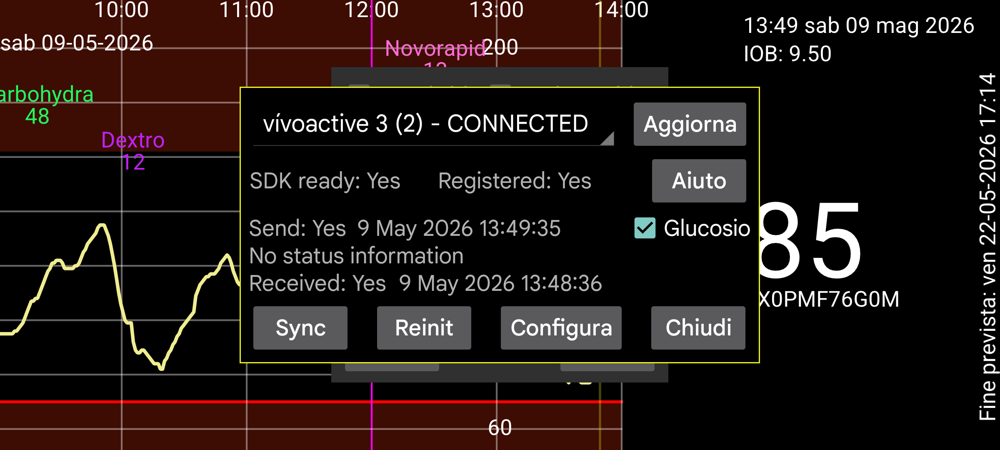

Kerfstok (https://apps.garmin.com/en-US/apps/b6348ccc-86d8-4780-8013-d9e19fed5260 (vedi anche https://www.juggluco.nl/Kerfstok/index.html) è un'app per orologi Garmin sportivi che consentono app di terze parti. Dalla 1.6.0 anche per orologi senza touchscreen. Kerfstok ha i seguenti utilizzi:
Inserire numeri e scambiarli con Juggluco;
Visualizza il valore del glucosio del flusso ricevuto da Juggluco;
Visualizza questo valore del glucosio durante lo sport, mostrando anche velocità e distanza. L'attività sarà registrata e potrà essere visualizzata nell'app connect di Garmin.
Questa app per orologio può connettersi tramite Bluetooth con Juggluco per scambiare valori e visualizzare continuamente il valore corrente del glucosio.
RISOLUZIONE PROBLEMI:
Innanzitutto, il nome del tuo orologio dovrebbe essere mostrato come "CONNESSO". Se no, risolvi il problema nell'app Connect di Garmin. In secondo luogo, Kerfstok dovrebbe essere avviato sul tuo orologio.
A volte la connessione tra orologio e telefono viene interrotta.
Se Send status è FAILURE_DURING_TRANSFER, puoi fare uno o tutti i seguenti:
- Disattiva e riattiva il Bluetooth, e successivamente premi Reinit;
- Riavvia l'orologio (quasi sempre con successo, ma a volte deve essere fatto più volte);
- Riavvia il telefono (ultima opzione).
Per altri problemi forzare la chiusura dell'app Garmin connect, riavviarla e premere reinit può essere utile.
Se c'è una connessione corretta e per qualche motivo i valori su orologio e telefono sono fuori sincronia, puoi premere Sync, per fargli inviare i numeri che non hanno ancora inviato, l'uno all'altro.
A volte viene mostrato un pulsante chiamato "Send Queue"; questo significa che ci sono messaggi non ancora inviati all'orologio. Normalmente saranno inviati automaticamente a tempo debito, ma a volte questo è stato interrotto e premere su Send queue continuerà l'invio. Ma se non è stato inviato a causa di una connessione interrotta questo ha pochissimo beneficio. Premere Send Queue durante una transazione in corso può interrompere la connessione.
A volte quando appare "Send Queue", c'è un problema di connessione che fa fluire i messaggi solo dal telefono all'orologio, non viceversa. Questo è il caso quando il tempo dopo "Receive" è più vecchio del tempo dopo "Send". Per ripararlo, devi nuovamente fare uno o tutti i seguenti, una o più volte:
Premi Reinit;
Forza la chiusura, l'app Garmin Connect e riavviala seguito dal premere Reinit;
Disattiva e riattiva il Bluetooth;
Riavvia l'orologio;
Riavvia il telefono.
Mi è capitato alcune volte che i problemi di connessione rimanessero anche dopo aver eseguito i passi precedenti, e il problema è stato risolto reinstallando Garmin Connect o, nelle info dell'app di Garmin Connect, cancellando l'archiviazione e riaprendola. Poiché Garmin Connect memorizza i dati su un server internet, puoi reinstallarlo senza perdere dati. Dopo aver cancellato i dati non ho nemmeno avuto bisogno di rieffettuare l'accesso, ho solo dovuto concedere molti permessi.
Refresh riscrive questa finestra di dialogo con nuove informazioni (ad esempio dopo Reinit o Sync).
Selezionando "Glucosio" si determina se i valori del glucosio sono inviati all'orologio.
Config: imposta Modalità scura, Scorciatoie e ID.
ATTENZIONE: Juggluco può essere usato solo con un Kerfstok. Non puoi connettere Juggluco a Kerfstok su più orologi o su un orologio e un computer da bici.